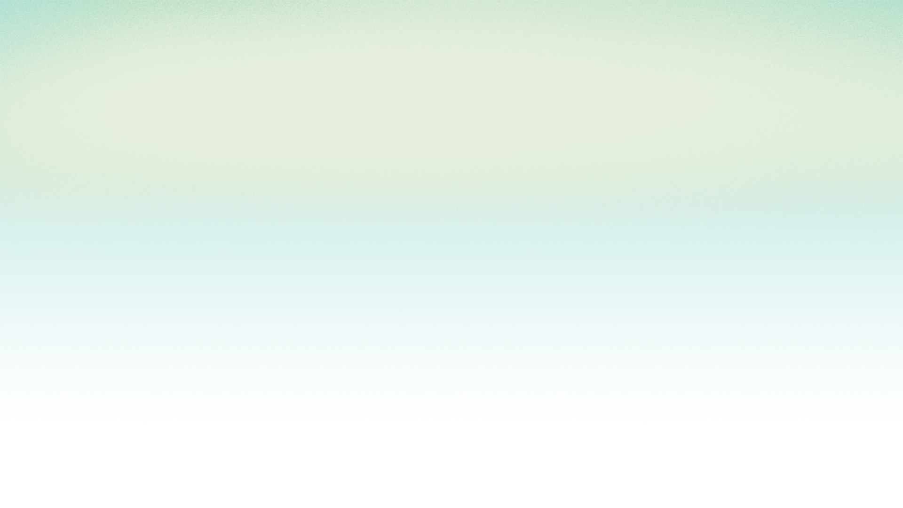
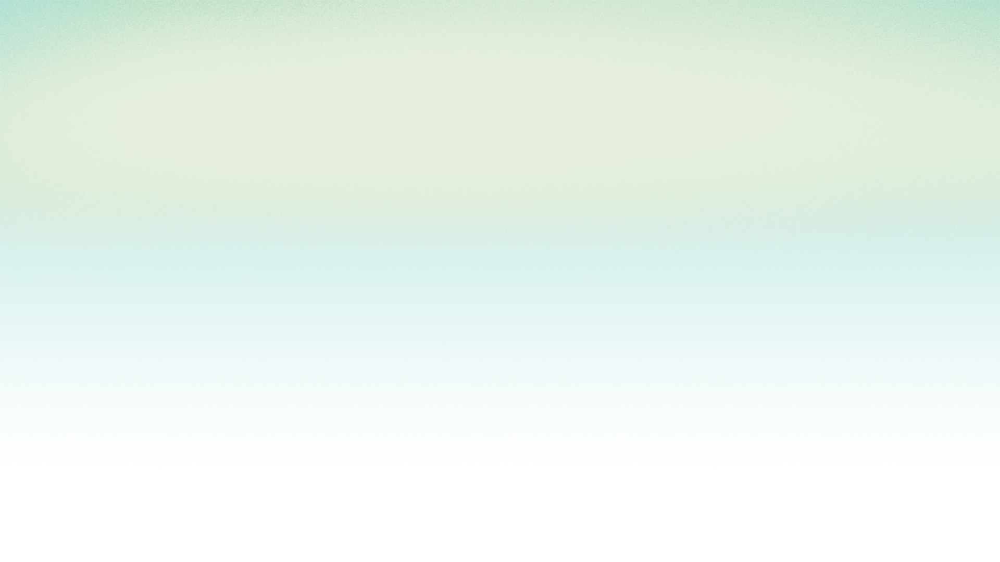

《You Have Only One Life》
There are moments in life when you miss someone so much that you just want to pick them from your dreams
and hug them for real! Dream what you want to dream;go where you want to go;be what you want to
be,because you have only one life and one
chance to do all the things you want to do.
May you have enough happiness to make you
sweet,enough trials to make you strong,enough sorrow to keep you human,enough hope to make you happy?
Always put yourself in others’shoes.If you
feel that it hurts you,it probably hurts the other person, too.
The happiest of people don’t
necessarily have the best of everything;they just make the most of everything that comes along their
way.Happiness lies for those who cry,those
who hurt, those who have searched,and those who have tried,for only they can appreciate the importance
of people.
who have touched their lives.Love begins with a smile,grows with a kiss and ends
with a tear.The brightest future will
always be based on a forgotten past, you can’t go on well in lifeuntil you let go of your past failures
and heartaches.When you were born,you were crying and everyone around you was smiling.Live your life so
that when you die,you're the one
who is smiling and everyone around you is crying.
Please send this message to those people
who mean something to you,to those who have touched your life in one way or another,to those who make
you smile when you really need it,to
those that make you see the brighter side of things when you are really down,to those who you want to
let them know that you appreciate their friendship.And if you don’t, don’t worry,nothing bad will happen
to you,you will just miss out on
the opportunity to brighten someone’s day with this message.
There are moments in life when you
miss someone so much that you just want to pick them from your dreams and hug them for real! Dream what
you want to dream;go where you want
to go;be what you want to be,because you have only one life and one chance to do all the things you want
to do.
May you have enough happiness to make you sweet,enough trials to make you
strong,enough sorrow to keep you human,enough
hope to make you happy? Always put yourself in others’shoes.If you feel that it hurts you,it probably
hurts the other person, too.
May you have enough happiness to make you sweet,enough trials to
make you strong,enough sorrow to keep
you human,enough hope to make you happy? Always put yourself in others’shoes.If you feel that it hurts
you,it probably hurts the other person, too.